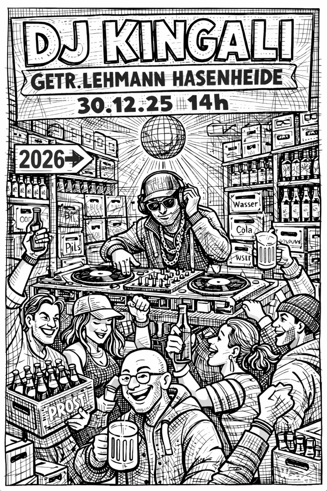
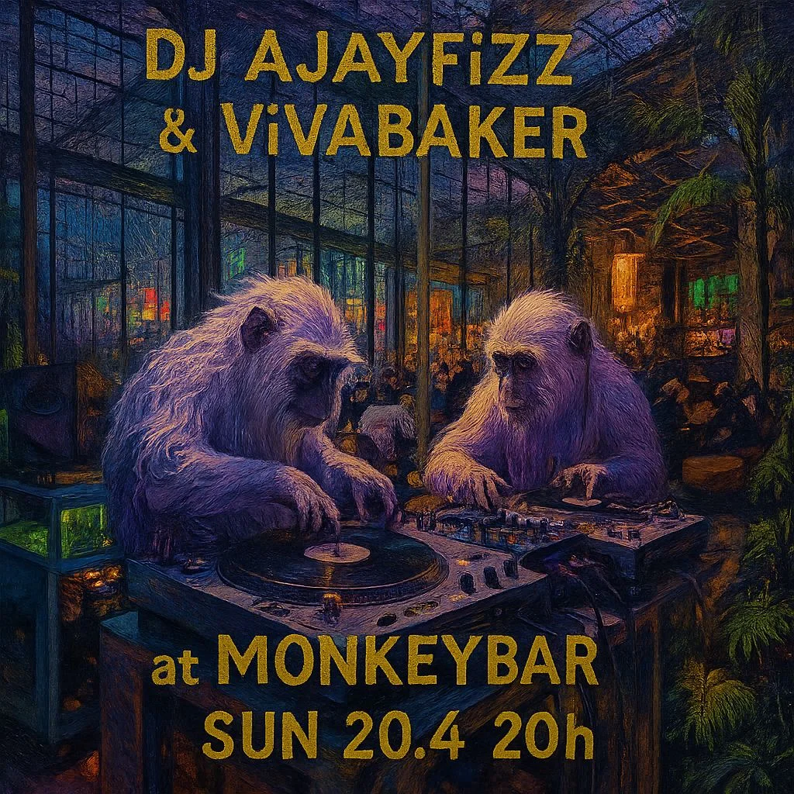
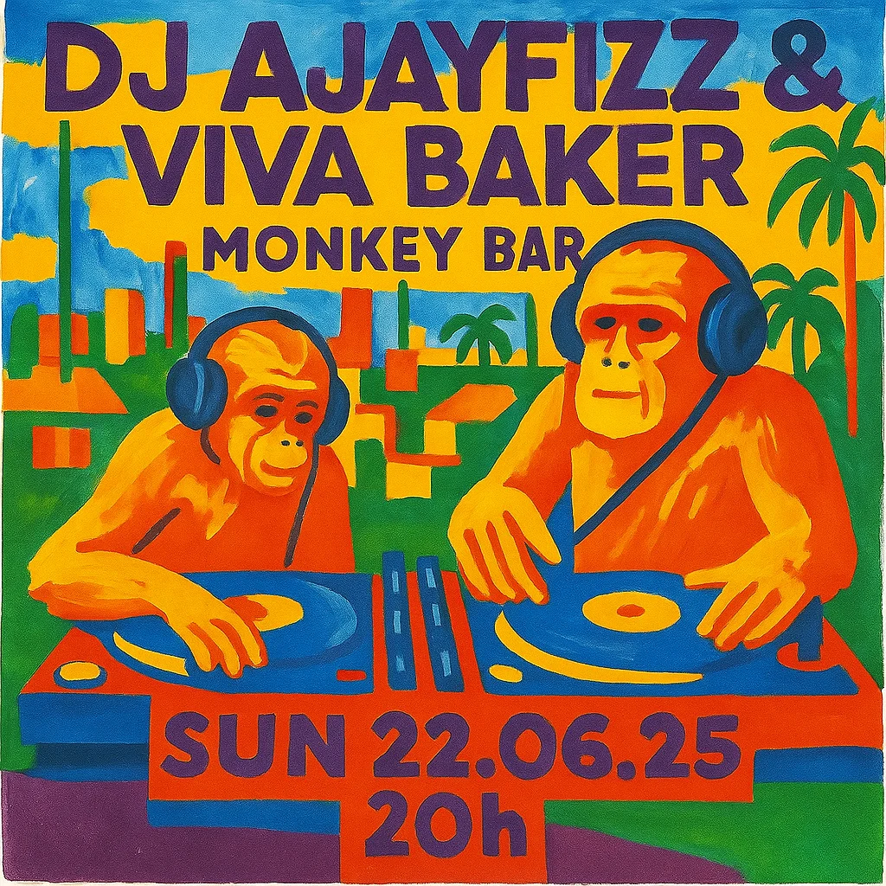

TECHNO · ELECTRONIC · BERLIN
KINGALI legt seit rund 30 Jahren auf. Angefangen mit Hip-Hop auf Vinyl, führte sein musikalischer Weg später tief in die Berliner Clubmusik.
Seine Sets bewegen sich zwischen House, Minimal, Tech House, Techno und Dub Techno. Keine Hochgeschwindigkeitsmusik. Kein Hardtechno. Stattdessen Musik mit Geduld. Grooves, die Raum lassen. Tracks, die ihre Zeit brauchen, um zu wirken.
Der Sound trägt die Handschrift einer Berliner Clubkultur, die sich zwischen 2005 und 2015 herausgebildet hat. Musik, die elektronisch und gleichzeitig menschlich klingt. Melodisch und treibend. Verspielt, ohne sich zu verlieren. Manchmal melancholisch. Immer ein wenig unberechenbar.
KINGALI spielt keine Genreübung. Er verbindet drei Jahrzehnte Erfahrung mit dem Instinkt für den richtigen Track im richtigen Moment. Oldschool im besten Sinne. Offen im Sound. Klar im Groove.

NÄCHSTE TERMINE
SET / MIXTAPE
HIP HOP · VINYL · 90S – NOW · ATLANTA · EAST · WEST · SOUTH
AJAYFIZZ & VIVA BAKER sind Niko und Daniel. Ihre gemeinsame Geschichte begann Mitte der Neunzigerjahre. Damals kauften sie ihre ersten Hip-Hop-Platten und legten als DJ-Team auf.
Nach vielen Jahren auf getrennten musikalischen Pfaden stehen sie heute wieder gemeinsam hinter den Plattenspielern.
Im Zentrum ihrer Sets stehen Hip-Hop und Rap aus der goldenen Vinylzeit. Besonders die Musik der mittleren und späten Neunzigerjahre. Viele dieser Platten lagen über Jahre in den Regalen. Heute werden sie wieder gespielt. Manche zum ersten Mal seit zehn oder zwanzig Jahren. Trotzdem sind Breaks, Stimmen und Übergänge noch immer im Gedächtnis.
Diese persönliche Verbindung macht ihre Sets aus. Die Musik ist keine Retroshow und keine reine Classics-Nacht. Beide haben über die Jahre weiter Platten gesammelt und ihren eigenen Geschmack ausgebaut.
Die Platten kommen von New York über Atlanta nach LA. Von den Kanten, aus Jonesboro, Brooklyn, Chicago, Houston, Miami.
Der gemeinsame Kern bleibt Hip-Hop. Darum herum entsteht ein Set aus Erinnerungen, neuen Entdeckungen, Hits, Albumtracks und Platten, die beide einfach lieben.
Zwei DJs. Zwei Sammlungen. Eine gemeinsame Geschichte, die nach Jahrzehnten weitergeht.


NÄCHSTE TERMINE
SET / MIXTAPE